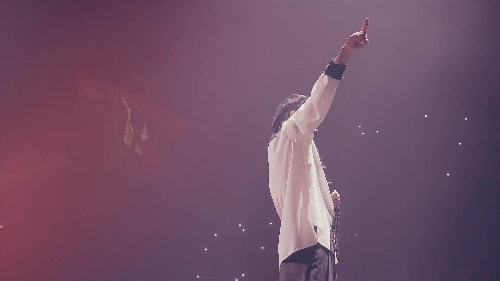
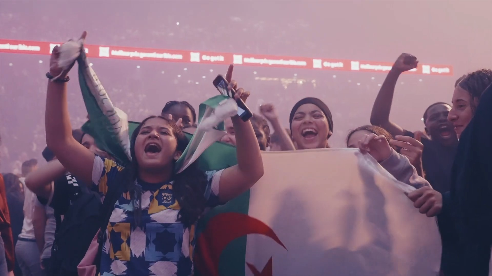
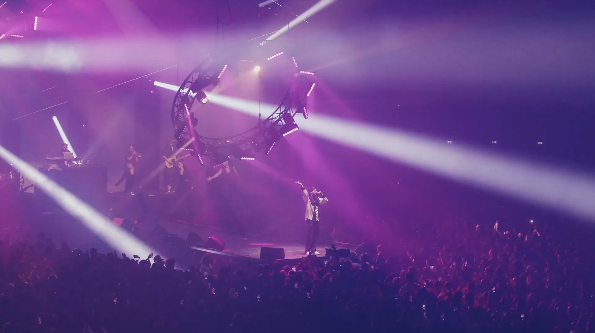

PROJETS
PROJET SUIVANT
PROJETS

 PROJET SUIVANT
PROJET SUIVANT
BERCY SOOLKING06
Travail en équipe réalisé pour Tech Play lors du concert de Soolking à Bercy.
J'ai pris en charge la création du motion design en totale autonomie, puis nous avons collaboré sur l'ensemble de la post-production.



antoine-riou.github.io | © 2020-2026 Tous droits réservés.